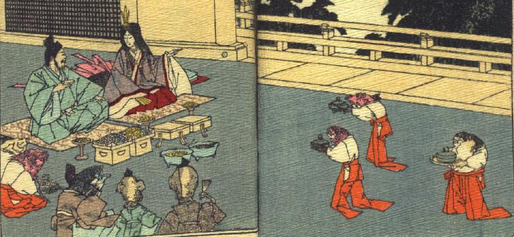

乙姫は女房装束に冠を着け、片手に扇子を持って座り、浦島太郎に話しかけている。浦島太郎は公家装束に烏帽子をかぶって座り、盃を片手に乙姫の話を聞いている。彼の前に食べ物が供されている。白い着物に赤い袴という女官のような装束の魚たちが器を運んでいる。そのうちの1体は河豚のようである。同じ装束の魚2体が浦島太郎の脇に座って控えている。公家装束に烏帽子の魚1体と蛸2体も同席している。蛸の1体は片手に扇子を持っている。
著作者：J.Dautremer／出典：親書誌：U426_nichibunken_0104：Ourasima／日付：2006／資源識別子：U426_nichibunken_0104_0006_0000
Copyright (c)2010- International Research Center for Japanese Studies, Kyoto, Japan. All rights reserved.